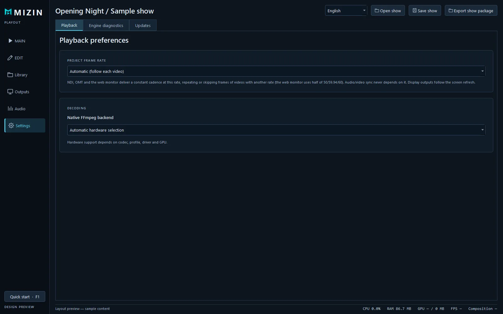
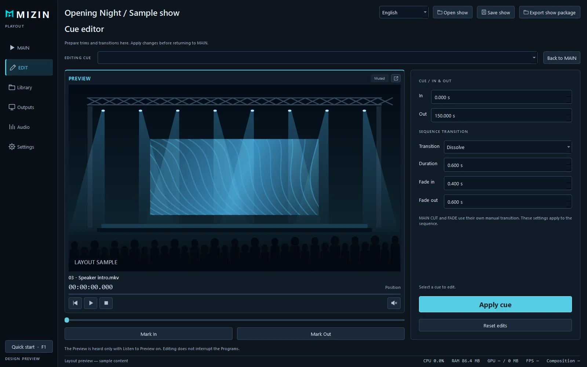
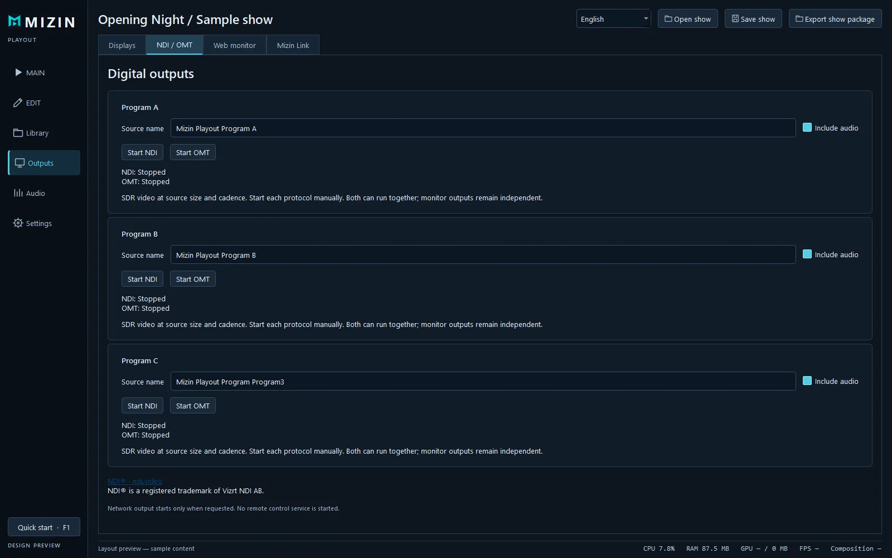
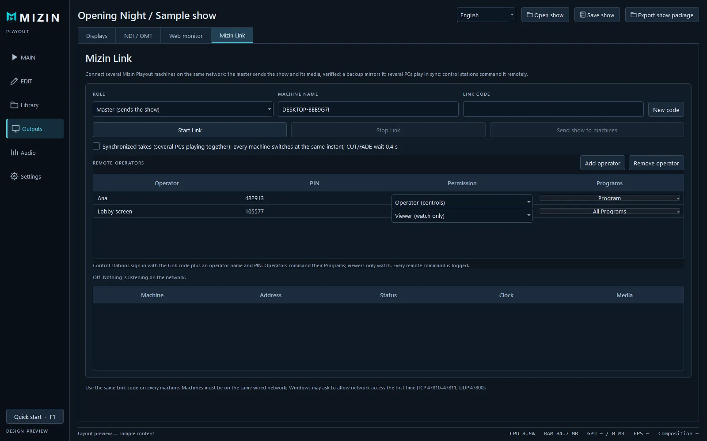

How to use Mizin Playout
Como usar o Mizin Playout
From installation to a full show in eleven short steps. Press F1 inside the app for the same guide.
Da instalação a um show completo em onze passos curtos. Aperte F1 dentro do app para o mesmo guia.
1 · Install
1 · Instalar
- Download the Setup or the portable ZIP.
- Setup installs for your account (no administrator). The ZIP runs from any folder or USB drive.
- Unsigned preview: on "Windows protected your PC" click More info → Run anyway.
- Settings live in your profile; Start portable.cmd keeps them beside the app.
- Baixe o Setup ou o ZIP portátil.
- O Setup instala na sua conta (sem administrador). O ZIP roda de qualquer pasta ou pendrive.
- Prévia sem assinatura: em "O Windows protegeu o computador" clique em Mais informações → Executar assim mesmo.
- As configurações ficam no seu perfil; o Start portable.cmd guarda tudo junto do app.
Updates: the app checks after it opens and shows a banner. You choose when to install; it waits until playback and outputs are stopped.Atualizações: o app verifica depois de abrir e mostra um aviso. Você escolhe quando instalar; ele espera a reprodução e as saídas pararem.
2 · Set up the project
2 · Ajuste o projeto
- Before building the show open Settings → Playback.
- In Project frame rate choose the event's rate: 29.97 or 30 fps for most video, 25 fps for PAL systems, 59.94/60 fps for LED walls with fast motion, 23.976/24 fps for cinema content.
- NDI, OMT and the web monitor then deliver a constant cadence at that rate; videos with another rate repeat or skip frames. Audio/video sync is never affected.
- Automatic follows each video, so the rate may change from clip to clip.
- Antes de montar o show abra Configurações → Reprodução.
- Em Frame rate do projeto escolha a taxa do evento: 29,97 ou 30 fps para a maioria dos vídeos, 25 fps em sistemas PAL, 59,94/60 fps para telão de LED com movimento rápido, 23,976/24 fps para conteúdo de cinema.
- NDI, OMT e o monitor web passam a entregar cadência constante nessa taxa; vídeos com outra taxa repetem ou pulam quadros. A sincronia de áudio e vídeo nunca é afetada.
- Automático segue cada vídeo, então a taxa pode mudar de um clipe para outro.

Tip: use the rate your switcher, vMix/OBS or LED processor expects. Screens connected to this computer always follow their own refresh rate.Dica: use a taxa que o seu switcher, vMix/OBS ou processador de LED espera. As telas ligadas a este computador sempre seguem a própria taxa de atualização.
3 · Build your first show
3 · Monte o primeiro show
- In MAIN, click Add media → files or a whole folder (or drag files in).
- Files stay where they are — nothing is converted.
- Reorder with the arrows; More duplicates or removes an item.
- Save show (Ctrl+S) creates a
.mizinshowfile. - Export show package copies the show and all its media into one folder you can take to another computer.
- Na MAIN, clique em Adicionar mídia → arquivos ou uma pasta inteira (ou arraste os arquivos).
- Os arquivos ficam onde estão — nada é convertido.
- Reordene com as setas; Mais duplica ou remove um item.
- Salvar show (Ctrl+S) cria um arquivo
.mizinshow. - Exportar pacote do show copia o show e todas as mídias para uma pasta que você leva para outro computador.

4 · Take it on air: CUT and FADE
4 · Coloque no ar: CUT e FADE
- Double-click an item (or Cue selected): it loads muted in PREVIEW and shows READY once checked.
- Choose the Take destination (Program).
- CUT (Ctrl+Enter) switches instantly; FADE (Ctrl+Space) uses the fade duration (300 ms by default).
- Black clears the selected Program. Loop repeats the current item.
- Dê dois cliques num item (ou Carregar selecionado): ele entra mudo na PRÉVIA e mostra PRONTO após a verificação.
- Escolha o Destino do envio (Program).
- CUT (Ctrl+Enter) troca na hora; FADE (Ctrl+Espaço) usa a duração do fade (300 ms por padrão).
- Preto limpa o Program selecionado. Loop repete o item atual.
- Manual: the item holds at its Out point.
- Manual: o item para no ponto de saída.
- Sequential: the next item is prepared and plays automatically, with its own transition; Repeat order loops the list.
- Sequencial: o próximo item é preparado e entra sozinho, com sua transição; Repetir lista repete a lista.
5 · Several Programs at once
5 · Vários Programs ao mesmo tempo
- Click + next to the take destination to add a Program (B, C…). Each has its own playlist and mode.
- The multiview shows every Program; click a tile name to edit its list without stopping the others.
- Copy A playlist starts a new Program with A's items.
- Clique no + ao lado do destino para criar um Program (B, C…). Cada um tem sua playlist e modo.
- A multiview mostra todos; clique no nome de um tile para editar a lista dele sem parar os outros.
- Copiar playlist de A começa um Program novo com os itens de A.
Removing a Program requires it to be black and with its screens and network outputs closed — a live Program is never removed by accident.Para remover um Program ele precisa estar em preto e com telas e saídas de rede fechadas — um Program no ar nunca é removido por engano.
6 · Detach decks and watch the ON AIR tally
6 · Destaque decks e acompanhe o NO AR
- Click the detach icon at the corner of a deck: it opens in its own window. Drag it to another monitor.
- F11 or the fullscreen button toggles fullscreen; Esc leaves it.
- Close the window (or click the dock note on the desk) to dock it again.
- A red bar and ON AIR mark Programs with media on air; the blue border is the take destination.
- Clique no ícone de destacar no canto do deck: ele abre numa janela própria. Arraste para outro monitor.
- F11 ou o botão de tela cheia alterna tela cheia; Esc sai.
- Feche a janela (ou clique no aviso no deck) para encaixar de volta.
- A barra vermelha e o NO AR marcam os Programs com mídia no ar; a borda azul é o destino do TAKE.
A deck window is an operator monitor, not an output. For the LED wall or projector use Outputs (step 7).A janela do deck é um monitor do operador, não uma saída. Para o telão de LED ou projetor use Saídas (passo 7).
7 · Trim and transitions
7 · Recortes e transições
- Select an item and open EDIT.
- Set In / Out, the sequence transition (Cut, Dissolve, Fade through black), fade in and fade out.
- Click Apply cue: changes take effect on the next launch; what is on air is not altered.
- Selecione um item e abra a EDIÇÃO.
- Defina In / Out, a transição da sequência (Corte, Dissolve, Passagem pelo preto), fade de entrada e de saída.
- Clique em Aplicar item: vale no próximo disparo; o que está no ar não muda.

8 · Screens (LED, projector, TV)
8 · Telas (LED, projetor, TV)
- Open Outputs → Displays. Each route has a Source (Program) and a Display.
- + Add display output creates more routes; several routes can mirror the same Program.
- Choose scaling: Native (recommended live) or Lanczos GPU.
- AREA shows only part of the video on that screen (LED wall split): halves, thirds, quarters or custom X/Y/W/H in %.
- Open output goes fullscreen on that display; Esc closes it — the Program keeps running.
- Abra Saídas → Telas. Cada rota tem uma Origem (Program) e uma Tela.
- + Adicionar saída de tela cria mais rotas; várias rotas podem espelhar o mesmo Program.
- Escolha a escala: Nativa (recomendada ao vivo) ou Lanczos GPU.
- ÁREA mostra só uma parte do vídeo naquela tela (telão dividido): metades, terços, quartos ou X/Y/L/A personalizados em %.
- Abrir saída abre em tela cheia naquela tela; Esc fecha — o Program continua rodando.

9 · NDI® and OMT
9 · NDI® e OMT
- Open Outputs → NDI / OMT.
- Name each Program's source and choose whether to include audio.
- Click Start NDI and/or Start OMT. They appear on the network for switchers, OBS, vMix and recorders.
- Abra Saídas → NDI / OMT.
- Dê nome à fonte de cada Program e escolha se inclui áudio.
- Clique em Iniciar NDI e/ou Iniciar OMT. Eles aparecem na rede para switchers, OBS, vMix e gravadores.

10 · Web monitor (phones and tablets)
10 · Monitor web (celulares e tablets)
- Open Outputs → Web monitor, choose Local network (LAN) and click Start web monitor.
- Share the address shown (it includes the access code), e.g.
http://192.168.1.30:8787/?k=…. - On the phone, open the address and tap Watch on a Program. Tap Sound to unmute.
- New code disconnects everyone. Windows may ask to allow network access the first time.
- Quality: Automatic follows the source up to 1080p; 720p, 1080p and 4K are fixed and change live. The graphics card encodes when available. On the page each viewer can also pick its own quality.
- Abra Saídas → Monitor web, escolha Rede local (LAN) e clique em Iniciar monitor web.
- Compartilhe o endereço mostrado (ele inclui o código de acesso), ex.:
http://192.168.1.30:8787/?k=…. - No celular, abra o endereço e toque em Assistir num Program. Toque em Som para ativar o áudio.
- Novo código desconecta todos. Na primeira vez o Windows pode pedir para liberar a rede.
- Qualidade: Automática segue a origem até 1080p; 720p, 1080p e 4K são fixas e mudam na hora. A placa de vídeo codifica quando disponível. Na página cada pessoa também pode escolher a sua qualidade.
View only: nothing in the browser controls the show. Keep it on the event network; do not expose the port to the internet.Só visualização: nada no navegador controla o show. Use na rede do evento; não exponha a porta na internet.
Mizin Link · several machines
Mizin Link · várias máquinas
- On every PC open Outputs → Mizin Link and use the same Link code.
- Main PC: role Master → Start Link. Other PCs: role Follower → Start Link; they find the master automatically.
- On the master click Send show to machines; each follower downloads and verifies the media.
- On each follower click Load received show.
- Backup: tick Mirror the master on the follower; it repeats every take, pause and black and follows the position. If the main fails, the red MASTER LOST bar appears and Take over as master promotes the backup.
- Playing together: tick Synchronized takes on the master; every CUT/FADE fires on all mirroring PCs at the same instant. For an LED wall, set each output's AREA in Outputs → Displays (halves, thirds, quarters or custom).
- Remote control: on the master add operators in Remote operators (name, PIN, permission, Programs). On the other PC choose Control station (remote), type the operator and PIN and start; the Remote desk sends CUT, FADE, BLACK and PAUSE, validated and logged by the playout machine.
- Em todos os PCs abra Saídas → Mizin Link e use o mesmo código do Link.
- PC principal: função Mestre → Iniciar Link. Outros PCs: função Seguidor → Iniciar Link; eles encontram o mestre sozinhos.
- No mestre clique em Enviar show para as máquinas; cada seguidor baixa e confere as mídias.
- Em cada seguidor clique em Carregar show recebido.
- Reserva: marque Espelhar o mestre no seguidor; ela repete cada disparo, pausa e preto e acompanha a posição. Se o principal cair, aparece a faixa vermelha MESTRE PERDIDO e Assumir como mestre promove a reserva.
- Tocando juntos: marque Disparo sincronizado no mestre; cada CUT/FADE dispara em todos os PCs espelhando no mesmo instante. Para um telão de LED, defina a ÁREA de cada saída em Saídas → Telas (metades, terços, quartos ou personalizada).
- Controle remoto: no mestre adicione operadores em Operadores remotos (nome, PIN, permissão, Programs). No outro PC escolha Estação de controle (remota), digite operador e PIN e inicie; a Mesa remota envia CUT, FADE, PRETO e PAUSA, conferidos e registrados pela máquina de playout.

11 · Audio and low-latency output
11 · Áudio e saída de baixa latência
- Audio page: each Program has volume, mute, local monitoring and device.
- For minimum delay, in Low-latency output pick WASAPI exclusive, your interface and Device minimum, then Start low-latency output.
- Assign each Program an output pair (A on 1–2, B on 3–4…).
- Keep Sync with the video on; use Fine adjust for projector/LED delay. Raise the buffer if you hear clicks.
- Preview listening: the headphones button on the PREVIEW deck plays the cued media on its own device (Audio page → PREVIEW).
- Project frame rate (Settings → Playback): a fixed rate gives NDI, OMT and the web monitor a constant cadence.
- AES67 / Dante: choose AES67 network (Dante-compatible) and the network adapter, set channels and receiver latency and start. The stream appears in Dante Controller (enable AES67 mode on the Dante devices); the status line shows the PTP clock.
- Página Áudio: cada Program tem volume, mudo, monitoramento local e dispositivo.
- Para o menor atraso, em Saída de baixa latência escolha WASAPI exclusivo, sua interface e Mínimo do dispositivo, e clique em Iniciar saída de baixa latência.
- Defina o par de saídas de cada Program (A em 1–2, B em 3–4…).
- Deixe Sincronizar com o vídeo ligado; use o Ajuste fino para o atraso do projetor/LED. Aumente o buffer se ouvir estalos.
- Ouvir o Preview: o botão de fone no deck PREVIEW toca o item em preparo num dispositivo próprio (página Áudio → PREVIEW).
- Frame rate do projeto (Configurações → Reprodução): uma taxa fixa dá cadência constante ao NDI, OMT e monitor web.
- AES67 / Dante: escolha Rede AES67 (compatível com Dante) e a placa de rede, defina canais e latência do receptor e inicie. O fluxo aparece no Dante Controller (ative o modo AES67 nos equipamentos Dante); a linha de status mostra o relógio PTP.

Troubleshooting
Solução de problemas
- App closed without saving: on the next start, accept "Recover show" to get the automatic copy back.
- Show opened on another computer, media not found: point to the media folder when asked, or use Library → Locate missing media.
- Setup blocked or fails: use the portable ZIP — same app, no installation.
- "Device is in use" on low-latency audio: another app holds the device in exclusive mode; close it or choose WASAPI shared.
- Web monitor does not open on the phone: same Wi-Fi/LAN? Allow the app in Windows Firewall (TCP port shown, UDP 50200–50399).
- NDI source not visible: check that both computers are on the same network and the firewall allows the app.
- Choppy video: Settings → Engine diagnostics shows decoding, FPS and timing per Program.
- O app fechou sem salvar: na próxima abertura, aceite "Recuperar show" para trazer a cópia automática de volta.
- Show aberto em outro computador e mídias não encontradas: aponte a pasta das mídias quando o app pedir, ou use Biblioteca → Localizar mídias ausentes.
- Setup bloqueado ou com erro: use o ZIP portátil — é o mesmo app, sem instalação.
- "Dispositivo em uso" no áudio de baixa latência: outro app está usando o dispositivo em modo exclusivo; feche-o ou escolha WASAPI compartilhado de baixa latência.
- Monitor web não abre no celular: mesmo Wi-Fi/rede? Libere o app no Firewall do Windows (porta TCP mostrada e UDP 50200–50399).
- Fonte NDI não aparece: confira se os computadores estão na mesma rede e se o firewall libera o app.
- Vídeo travando: Configurações → Diagnósticos do motor mostra decodificação, FPS e tempos por Program.